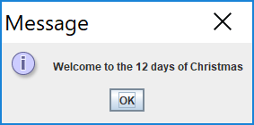
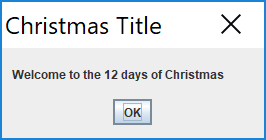
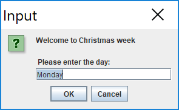
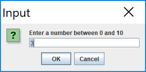
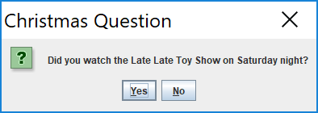

GUI · Swing · JOptionPane · dialog boxes · primitive arrays · array syntax
In this step, you will familiarise yourself with the JOptionPane class and particularly these methods:
Create a new Processing sketch in your workspace and call it lab05a_JOption.
We will use the same sketch for this entire step, so periodically save your work as you progress through it.
To use JOptionPane, we must import the Swing package:
import javax.swing.JOptionPane;Type in the following code in your sketch:
JOptionPane.showMessageDialog(null,
"Welcome to the 12 days of Christmas");Run your code.
You should get the following output:

The default option (above) has a small icon.
To have no such icon, you can add a 'PLAIN_MESSAGE' option. Add this code to the above code (you now should have two JOptionPanes in your code):
JOptionPane.showMessageDialog(null,
"Welcome to the 12 days of Christmas",
"Christmas Title",
JOptionPane.PLAIN_MESSAGE);Note that we also included a title for our message.
Run your code.
You should get the following output:

We will now look at user input and read in a String.
Add the following code:
String day = JOptionPane.showInputDialog(
"Welcome to Christmas week\n\n " + "Please enter the day: ",
"Monday");
println("Day is : " + day);Run your code.
This code should present you with this input dialog:

Also, the print statement will print out the day of the week you entered on the console.
We will now look at user input and read in a number.
As the input dialog reads from the user in String format, we will need to convert the String to a number if we want to do any mathematical operations on it:
int num = Integer.parseInt(
JOptionPane.showInputDialog("Enter a number between 0 and 10", "3" )
);Add this code...it simply performs a mathematical calculation on the number read in and displays the result on the console:
num++;
println("Your number incremented by 1 is : " + num);Run the code.
This code should present you with this input dialog:

Also, the print statement will print out the number you entered, incremented by 1.
Sometimes we will need a simple yes/no dialog.
Include the following code in your sketch:
int reply = JOptionPane.showConfirmDialog(null,
“Did you watch the Late Late Toy Show on Saturday night?",
"Christmas Question",
JOptionPane.YES_NO_OPTION);Add this code...it simply displays an int representation of your choice to the console:
println("You chose: " + reply);Run the code.
Your output should now look like:

And it should display an int representation of your choice to the console.
Save your work and close the project.
We will continue working on JOptionPane in the exercises.
In this step, we will introduce the use of arrays, in a similar manner as discussed in your lectures. Instead of reading in 10 numbers, we will just look at using 5.
Here you will use JOptionPane to read in 5 numbers, add them together and print their sum in the console window.
Create a new Processing sketch in your workspace and call it lab05a_Arrays_01.
Type the following code into your sketch:
import javax.swing.*;
int number = 0;
int sum = 0;
for (int i = 0; i<5; i++) {
number = Integer.parseInt(JOptionPane.showInputDialog(
"Please enter a number ", "3")
);
sum += number;
}
println("The sum of the values you typed in is : " + sum);Run your code.
The sum of the 5 numbers you have entered should be printed to the console e.g.
The sum of the values you typed in is : 15Save your work, but don't close the sketch.
In the above sketch, we read in 5 numbers and printed out a running total of the numbers. However, we didn't store the numbers we entered. Here, we will refactor our code (not using arrays) to save the 5 entered numbers.
Save your exsiting sketch as lab05a_Arrays_02
Refactor your code so that it declares 5 variables; these variables are then used to store each of the entered numbers. Then print out the sum of the numbers, along with the actual numbers entered. The code is here:
import javax.swing.*;
int n0, n1, n2, n3, n4;
int sum = 0;
n0 = Integer.parseInt(JOptionPane.showInputDialog("Please enter a number ", "3"));
sum += n0;
n1 = Integer.parseInt(JOptionPane.showInputDialog("Please enter a number ", "3"));
sum += n1;
n2 = Integer.parseInt(JOptionPane.showInputDialog("Please enter a number ", "3"));
sum += n2;
n3 = Integer.parseInt(JOptionPane.showInputDialog("Please enter a number ", "3"));
sum += n3;
n4 = Integer.parseInt(JOptionPane.showInputDialog("Please enter a number ", "3"));
sum += n4;
println("The sum of the values you typed in is : " + sum);
println("Number 1 is: " + n0);
println("Number 2 is: " + n1);
println("Number 3 is: " + n2);
println("Number 4 is: " + n3);
println("Number 5 is: " + n4);Run your code. The sum of the 5 numbers you have entered should be printed to the console, along with the numbers you just entered e.g.
The sum of the values you typed in is : 15
Number 1 is: 5
Number 2 is: 4
Number 3 is: 3
Number 4 is: 2
Number 5 is: 1Save your work, but don't close the sketch.
Here you will use JOptionPane to read in 5 numbers into an array, add them together and print their sum in the console window. In this code, we declare an integer array of size 5(allowing 5 values to be stored from index 0 to 4).
Save your exsiting sketch as lab05a_Arrays_03
import javax.swing.*;
int a[] = new int[5];
int sum = 0;
for (int i = 0; i < 5 ; i ++) {
a[i] = Integer.parseInt(JOptionPane.showInputDialog(
"Please enter a number ", "3"));
}
for (int i = 0; i < 5 ; i ++) { // now we sum the values
sum += a[i];
}
println("The sum of the values you typed in is : " + sum);Run your code. The sum of the 5 numbers you have entered should be printed to the console.
How would you change this code to readin and add 8 numbers? (You should find this to be the best solution)
A primitive array is of fixed size. So once you construct (using new) the array, you cannot change its size.
However, you can read in this value (size of the array) before constructing the array.
The next piece of code demonstrates this approach.
Create a new Processing sketch in your workspace and call it Arrays_04.
Include the following code in your sketch (do not cut and paste it, type it in):
Add in the following code :
import javax.swing.*;
int a[];
int numData = Integer.parseInt(JOptionPane.showInputDialog("How many values do you wish to sum? ", "3"));
//now, use this value to make the array this size.
a = new int[numData];
int sum = 0;
for (int i = 0; i < numData ; i ++)
{
a[i] = Integer.parseInt(JOptionPane.showInputDialog("Please enter a number ", "3"));
sum += a[i];
}
println("The sum of the values you typed in is : " + sum);Run your code. The sum of the number of numbers you have entered should be printed to the console.
You should see that this is a good way to deal with summing a unknown number of values.
Save the code.
The exercises are based on the material we covered in the previous steps in this lab.
For each exercise listed below, open a new sketch.
When you are finished all your exercises, zip all your exercises into one file and upload them into the associated dropbox in Moodle.
Change the text in the message dialog box (showMessageDialog) .
Change the icon in the message box (where would you find the different options? )
Change the text in the data input box (showInputDialog) to your own choice. Also, check that the output on the console shows that the input has been sucessful.
Using Integer.parseInt, convert the input into a number. Using println(), show that the input has been converted to a number (hint: Try to add the number to another number)
The exercises are based on the material we covered in the previous steps in this lab.
For each exercise listed below, open a new sketchbook.
When you are finished all your exercises, zip all your exercises into one file and upload them into the associated dropbox in Moodle.
Write a program to declare and construct an integer array (a) of size 10. Initialise the array by putting 10 in each of the cells. Print out the values to the console (one line at a time).
Write a program to declare and construct an integer array (a) of size 5. Read in 5 values into the array. Print out the values to the console (one line at a time) in the order they were entered.
Write a program to declare and construct an integer array (a) of size 5. Read in 5 values into the array. Print out the values to the console (one line at a time) in the reverse order to the order they were entered in.
Write a program to declare and construct an integer array (a) of size 5. Read in 5 values into the array. Then add 10 to each of these values. Then print out the values to the console.
The solutions for this lab can be found here.
If you require unzipping software, 7zip is a good choice: http://www.7-zip.org/ (or Keka for Mac http://www.kekaosx.com/en/)
After unzipping the solutions, it might be a good idea to copy the folders to your sketchbook folder. From Processing, you could then use File, followed by Sketchbook to easily open them.